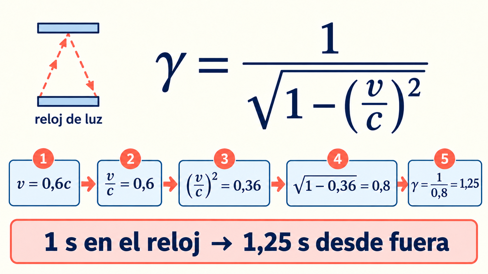

5.º secundaria · Unidad 7 · Lección 1
Relatividad especial,
paso a paso
Repasemos lo conocido antes de llegar al factor de Lorentz.
Marco de referencia
Es el lugar desde el que medimos posiciones, movimientos y tiempos. Por ejemplo: el tren o el andén.
La luz en el vacío
Su rapidez es c para ambos observadores, aunque se muevan uno respecto del otro.
Si c permanece igual, ¿qué puede cambiar?
Paso 1
¿Qué es un reloj de luz?
▰
↑↓
▰Dos espejos + un pulso de luz
↑↓
▰Dos espejos + un pulso de luz
1La luz sube.
2La luz baja.
3Ida y vuelta = un tic.
Desde el andén, el reloj avanza: la luz recorre una diagonal más larga. Como su rapidez sigue siendo c, ese tic ocupa más tiempo según el andén.
Paso 2
¿Qué significa «al mismo tiempo»?
AB
Desde el andén
Los relojes sincronizados registran los destellos A y B a la misma hora.
Desde el tren
Los relojes de ese marco pueden asignarles horas diferentes.
Ver llegar primero una luz no basta: hay que distinguir cuándo ocurrió el destello de cuándo llegó su luz.
Paso 3 · Una sola cuenta
El factor de Lorentz, pieza por pieza

Paso 4 · Ejemplos
¿Qué nos dice γ?
Supón que el reloj de luz marca 1 segundo junto a él. Desde el otro marco, el intervalo es Δt = γ × 1 s.
v = 0γ = 11 s → 1 s
v = 0,6cγ = 1,251 s → 1,25 s
v = 0,8cγ ≈ 1,671 s → 1,67 s
Estos valores son ejemplos idealizados. El reloj funciona normalmente en su propio marco.